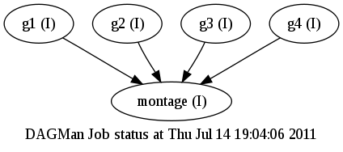

Following exercises are based on the exercises made by Alain Roy from the Condor team of University of Wisconsin-Madison. A big thanks to Alain for letting us use them.
During this exercises we will be using Condor version 7.6.1 which is the most current stable version.
Some useful links:
The Condor Pool at SC-CAMP'11 is actually deployed on the top of the Grid5000 to which you had an introduction on Tuesday. It consists of 30 hosts:
During the exercises we will refer to the schedd node as User Interface (UI).
Before you start, make sure you can access it. All you need is a G5K account and internet access:
log to the G5K access
log to the G5K frontend
log to the Condor UI using the user name below with password costarica.
The details will be provided just at the beginning of the session as it depends on the current reservation.
Notice what all can G5K allow you to do - deploy a Grid engine.
Account Name -------------- sccamp1: Alejandro José Baltodano Madrigal sccamp2: Andrei Fuentes Leiva sccamp3: Andrés José Aguilar Umaña sccamp4: Daniel Andrés Chacón Soto sccamp5: Edwin Adverdi Pérez Ventura sccamp6: Esteban Pérez Hodalgo sccamp7: Fabian Fallas Moya sccamp8: Giorgia Di Bianca sccamp9: Guillermo Andree Oliva Mercado sccamp10: Gustavo Martínez Rivera sccamp11: José Esteban Pérez Hidalgo sccamp12: Joseiby Hernández Cedeño sccamp13: Julián Collado Umaña sccamp14: Kelvin Jose Jimenez Morales sccamp15: Marcela Alpízar Víquez sccamp16: Marcial Garbanzo Salas sccamp17: Marco Antonio Boniche Barquero sccamp18: Moreno Baricevic sccamp19: Ricardo Román Brenes sccamp20: Ricardo José Alvarado Villalobos sccamp21: Salvador Salado sccamp22: Sebastián Argüello Gutiérrez sccamp23: Emmanuel Vargas Blanco
We recommend to create a directory for each exercise so you can easily manage files and make sure that you do not override you stuff.
Supported languages:
Before you start doing any of these exercises, you need to initiate condor environment by executing:
$ . /opt/condor/condor.sh
This will add Condor binaries into you path as well as set
CONDOR_CONFIG variable that point to the config file of Condor and it
is used by most of the binaries.
Condor is installed in this pool in the /opt/condor directory.
How do you know what version of Condor you are using? Try
condor_version:
$ condor_version $CondorVersion: 7.6.1 May 31 2011 BuildID: 339001 $ $CondorPlatform: x86_64_deb_5.0 $
Condor has some configuration files that it needs to find. It finds them because you have put CONDOR_CONFIG into your environment using the script above:
$ echo $CONDOR_CONFIG /etc/condor/condor_config
Condor has some directories that it keeps records of jobs in. Remember that each submission computer keeps track of all jobs submitted to it. That's in the local directory:
$ condor_config_val -v LOCAL_DIR LOCAL_DIR: /var/lib/condor Defined in '/opt/condor/etc/condor_config.local', line 4. $ ls -CF /var/lib/condor log/ execute/ spool/
The spool directory is where Condor keeps the jobs you submit, while the execute directory is where Condor keeps running jobs.
Check if Condor is running:
% ps auwx --forest | grep condor_ | grep -v grep condor 2873 0.0 0.0 33328 3676 ? Ss 07:48 0:00 condor_master condor 2874 0.0 0.0 33048 4840 ? Ss 07:48 0:00 \_ condor_collector -f condor 2875 0.0 0.0 32784 4876 ? Ss 07:48 0:00 \_ condor_negotiator -f condor 2876 0.0 0.0 34464 5512 ? Ss 07:48 0:00 \_ condor_schedd -f root 2877 0.0 0.0 21896 2520 ? S 07:48 0:00 \_ condor_procd -A /tmp/condor-lock.suno-110.421387535127909/procd_pipe.SCHEDD -R 10000000 -S 60 -C 106
There are five processes running: the condor_master, the
condor_collector, the condor_negotiator, condor_schedd, and the
condor_procd. In general, you might see many different Condor
processes. Here's a list of the processes:
condor_master: This program runs constantly and ensures that all
other parts of Condor are running. If they hang or crash, it restarts
them.
condor_schedd: If this program is running, it allows jobs to be
submitted from this computer--that is, your computer is a "submit
machine". This will advertise jobs to the central manager so that it
knows about them. It will contact a condor_startd on other execute
machines for each job that needs to be started.
condor_procd: This
process helps Condor track process (from jobs) that it creates
condor_collector: This program is part of the Condor central manager.
It collects information about all computers in the pool as well as which
users want to run jobs. It is what normally responds to the
condor_status command.
condor_negotiator: This program is part of the Condor central
manager. It decides what jobs should be run where. It is run on the
same computer as the collector.
condor_startd: If this program is running, it allows jobs to be
started up on this computer--that is, your computer is an "execute
machine". This advertises your computer to the central manager so that
it knows about this computer. It will start up the jobs that run.
condor_shadow: For each job that has been submitted from this
computer, there is one condor_shadow running. It will watch over the job
as it runs remotely. In some cases it will provide some assistance. You
may or may not see any condor_shadow processes running, depending on
what is happening on the computer when you try it out.
You can find out what jobs have been submitted on your computer with the condor_q command:
$ condor_q -- Submitter: suno-11.sophia.grid5000.fr : <138.96.21.111:52361> : suno-11.sophia.grid5000.fr ID OWNER SUBMITTED RUN_TIME ST PRI SIZE CMD 0 jobs; 0 idle, 0 running, 0 held
Nothing is running right now. If something was running, you would see output like this:
$ condor_q -- Submitter: suno-11.sophia.grid5000.fr : <138.96.21.111:52361> : suno-11.sophia.grid5000.fr ID OWNER SUBMITTED RUN_TIME ST PRI SIZE CMD 60256.0 bbockelm 7/6 21:01 0+00:00:00 I 0 0.0 mytest.sh 60279.0 roy 7/7 16:55 0+00:00:01 R 0 0.0 mytest.sh 60279.1 roy 7/7 16:55 0+00:00:01 R 0 0.0 mytest.sh 60279.2 roy 7/7 16:55 0+00:00:01 R 0 0.0 mytest.sh 60279.3 roy 7/7 16:55 0+00:00:01 R 0 0.0 mytest.sh 60279.4 roy 7/7 16:55 0+00:00:01 R 0 0.0 mytest.sh 6 jobs; 1 idle, 5 running, 0 held
The output that you see will be different depending on what jobs are running. Notice what we can see from this:
ID: jobs cluster and process number. For the first job, the cluster is 60256 and the process is 0.OWNER: who owns the job.SUBMITTED: when the job was submittedRUN_TIME: how long the job has been running.ST: what the current state of the job is. I is idle, R is running.PRI: the priority of the job.SIZE: the memory consumption of the job.CMD: the program that is being executed. You can find out what computers are in your Condor pool. (A pool is
similar to a cluster, but it doesn't have the connotation that all
computers are dedicated full-time to computation: some may be desktop
computers owned by users.) To look, use condor_status:
$ condor_status Name OpSys Arch State Activity LoadAv Mem ActvtyTime slot1@sol-49.sophi LINUX X86_64 Unclaimed Idle 0.000 992 0+00:15:04 slot2@sol-49.sophi LINUX X86_64 Unclaimed Idle 0.000 992 0+00:15:05 slot3@sol-49.sophi LINUX X86_64 Unclaimed Idle 0.000 992 0+00:15:06 slot4@sol-49.sophi LINUX X86_64 Unclaimed Idle 0.000 992 0+00:15:07 slot1@sol-5.sophia LINUX X86_64 Unclaimed Idle 0.000 992 0+00:14:31 slot2@sol-5.sophia LINUX X86_64 Unclaimed Idle 0.000 992 0+00:15:05 slot3@sol-5.sophia LINUX X86_64 Unclaimed Idle 0.000 992 0+00:15:06 slot4@sol-5.sophia LINUX X86_64 Unclaimed Idle 0.000 992 0+00:15:07 slot1@suno-10.soph LINUX X86_64 Unclaimed Idle 0.000 4029 0+00:15:04 slot2@suno-10.soph LINUX X86_64 Unclaimed Idle 0.000 4029 0+00:15:05 slot3@suno-10.soph LINUX X86_64 Unclaimed Idle 0.000 4029 0+00:15:06 slot4@suno-10.soph LINUX X86_64 Unclaimed Idle 0.000 4029 0+00:15:07 slot5@suno-10.soph LINUX X86_64 Unclaimed Idle 0.000 4029 0+00:15:08 slot6@suno-10.soph LINUX X86_64 Unclaimed Idle 0.000 4029 0+00:15:09 slot7@suno-10.soph LINUX X86_64 Unclaimed Idle 0.000 4029 0+00:15:10 slot8@suno-10.soph LINUX X86_64 Unclaimed Idle 0.000 4029 0+00:15:03 Total Owner Claimed Unclaimed Matched Preempting Backfill X86_64/LINUX 16 0 0 16 0 0 0 Total 16 0 0 16 0 0 0
Each computer shows up four or eight times, with a slotN at the beginning of the name. This is because we've configured Condor to be able to run multiple jobs per computer. Slot refers to job slot. We do this because these are multi-core computers and they are fully capable of running more jobs at once.
Let's look at exactly what you can see:
Name: The name of the computer. Sometimes this gets chopped off, like above.OpSys: The operating system, though not at the granularity you may wish: It says "Linux" instead of which distribution and version of Linux.Arch: The architecture, such as INTEL or PPC.State: The state is often Claimed (when it is running a Condor job) or Unclaimed (when it is not running a Condor job). It can be in a few other states as well, such as Matched.Activity: This is usually something like Busy or Idle. Sometimes you may see a computer that is Claimed, but no job has yet begun on the computer. Then it is Claimed/Idle. Hopefully this doesn't last very long.LoadAv: The load average on the computer.Mem: The computers memory in megabytes.ActvtyTime: How long the computer has been doing what it's been doing. The object of this exercise to have you run and understand your first Condor job, as well as run small sets of jobs in a parameter sweep. This is an important exercise because it is the basis for everything that follows. If there is anything you don't understand in this exercise, please ask before you continue on.
Let's start with the classical Hello World example.
Your first exercise - a warm up - in this session. You are asked to
write a simple program that takes a string argument, a name, and outputs
a greeting like "Hello <name> is the provided argument and <machine> is the hostname of
the host executing the jobs (use the gethostname() function for that
if you use C). Also include a 5 second delay before exiting so you can
see the execution in the schedd queue. Feel free to write in any
language you like that is supported (including bash).
After you have done with coding and compiling, test it if it runs:
$ ./simple SC-CAMP11 Hello SC-CAMP11 from Condor on machine sol-9.sophia.grid5000.fr
You are now almost ready to run this job in Condor. The last thing you
have to do is to create a Condor submit file. To do that, put the
following text into a file called simple.sub:
Universe = vanilla Executable = simple Arguments = SC-CAMP11 Log = simple.log Output = simple.out Error = simple.err should_transfer_files = YES when_to_transfer_output = ON_EXIT Queue
These lines should be more less self-explainable, but just to make sure:
Universe: The vanilla universe means a plain old job. Later on,
we'll encounter some special universes.
Executable: The name of your program
Log: This is the name of a file where Condor will record information
about your job's execution. While it's not required, it is a really
good idea to have a log.
Output: Where Condor should put the standard output from your job.
Error: Where Condor should put the standard error from your job. Our
job isn't likely to have any, but we'll put it there to be safe.
should_transfer_files: Tell Condor that it should transfer files, instead of relying on a shared filesystem.
when_to_transfer_output: A technical detail about when files should
be transported back to the computer from which you submitted your
job.
Next, tell Condor to run your job:
$ condor_submit simple.sub Submitting job(s). Logging submit event(s). 1 job(s) submitted to cluster 10.
Now, we can watch the execution using the condor_q command:
$ condor_q
Or more conveniently using the watch command:
$ watch -n 1 condor_q
The output will be something like this:
Submitting job(s). 1 job(s) submitted to cluster 3. sccamp24@suno-11:~$ condor_q -- Submitter: suno-11.sophia.grid5000.fr : <138.96.21.111:52361> : suno-11.sophia.grid5000.fr ID OWNER SUBMITTED RUN_TIME ST PRI SIZE CMD 3.0 sccamp24 7/14 08:17 0+00:00:02 R 0 0.0 simple 1 jobs; 0 idle, 1 running, 0 held sccamp24@suno-11:~$ condor_q -- Submitter: suno-11.sophia.grid5000.fr : <138.96.21.111:52361> : suno-11.sophia.grid5000.fr ID OWNER SUBMITTED RUN_TIME ST PRI SIZE CMD 3.0 sccamp24 7/14 08:17 0+00:00:03 R 0 0.0 simple 1 jobs; 0 idle, 1 running, 0 held sccamp24@suno-11:~$ condor_q -- Submitter: suno-11.sophia.grid5000.fr : <138.96.21.111:52361> : suno-11.sophia.grid5000.fr ID OWNER SUBMITTED RUN_TIME ST PRI SIZE CMD 3.0 sccamp24 7/14 08:17 0+00:00:05 R 0 0.0 simple 1 jobs; 0 idle, 1 running, 0 held sccamp24@suno-11:~$ condor_q -- Submitter: suno-11.sophia.grid5000.fr : <138.96.21.111:52361> : suno-11.sophia.grid5000.fr ID OWNER SUBMITTED RUN_TIME ST PRI SIZE CMD 0 jobs; 0 idle, 0 running, 0 held
Now let's have a look at the output files. If everything worked out fine, you should see three files:
simple.out - the standard output from the executablesimple.err - the standard error from the executablesimple.log - the log fileLet's start with the log file:
$ cat simple.log 000 (004.000.000) 07/14 08:19:22 Job submitted from host: <138.96.21.111:52361> ... 001 (004.000.000) 07/14 08:19:23 Job executing on host: <138.96.22.5:43315> ... 005 (004.000.000) 07/14 08:19:28 Job terminated. (1) Normal termination (return value 0) Usr 0 00:00:00, Sys 0 00:00:00 - Run Remote Usage Usr 0 00:00:00, Sys 0 00:00:00 - Run Local Usage Usr 0 00:00:00, Sys 0 00:00:00 - Total Remote Usage Usr 0 00:00:00, Sys 0 00:00:00 - Total Local Usage 61 - Run Bytes Sent By Job 9294 - Run Bytes Received By Job 61 - Total Bytes Sent By Job 9294 - Total Bytes Received By Job ...
Sounds good, lets see the output:
$ cat simple.out Hello SC-CAMP11 from Condor on machine suno-1.sophia.grid5000.fr
What can you tell from this output?
Let's write a different program now sum - it will take two numbers as its
arguments and prints out its sum:
$ ./sum 1 2 1 + 2 = 3
In the previous section you saw how to run a single job. If you only
ever had to run a single job, you probably wouldn't need Condor. But we
would like to have our program calculate a whole set of values for
different inputs. How can we do that? Let's make a new submit file
called sum.sub that look like this:
Universe = vanilla Executable = sum Arguments = 1 2 Log = sum.$(Process).log Output = sum.$(Process).out Error = sum.$(Process).error should_transfer_files = YES when_to_transfer_output = ON_EXIT Queue Arguments = 2 3 Queue Arguments = 4 5 Queue
There are two important differences to notice here. First, the Log,
Output and Error lines have the $(Process) macro in them. This means
that the output and error files will be named according to the process
number of the job. You'll see what this looks like in a moment. Second,
we told Condor to run the same job an extra two times by adding extra
Arguments and Queue statements. Let's see what happens:
$ condor_submit sum.sub Submitting job(s)... Logging submit event(s)... 3 job(s) submitted to cluster 60282. $ ls sum*out sum.0.out sum.1.out sum.2.out $ cat sum*out 1 + 2 = 3 2 + 3 = 5 4 + 5 = 9
Notice that we had three jobs with the same cluster number, but different process numbers. They have the same cluster number because they were all submitted from the same submit file. When the jobs ran, they created three different output files, each with the desired output.
You are now ready to submit lots of jobs! Although this example was
simple, Condor has many, many options so you can get a wide variety of
behaviors. You can find many of these if you look at the documentation
for condor_submit.
Now that you've gotten your feet wet, try a few things on your own.
There's no reason to have a separate log file for each job. Change your submit file so that it uses a single log file.
You might have noticed that the output files were over-written when you
re-ran the jobs. (That is, simple.1.out was just re-written.) That was
okay for a simple exercise, but it might be very bad if you had wanted
to keep around the results. Maybe you changed a parameter or rebuilt
your program, and you want to compare the outputs.
Just like you used $(Process), you can also use $(Cluster). This will be
a number from your job ID. For example, it would be 3 from the above
example. Change your submit file to use $(Cluster) and $(Process). If
you do two job submissions, will you have separate output files?
Instead of specifying the Arguments multiple times with multiple queue statements, try this:
Arguments = $(Process) $(Cluster) queue 50
What does it mean?
What happens?
Does it work as you expect?
An aside: you might wish to be able to do math, something like
$(Process)+1. Unfortunately, you can't do that.
This exercise will teach you a few nifty commands to help you use Condor more easily.
You're been using condor_q, but it shows the jobs of everyone who
submitted from the computer you are running the command on. If you want
to see just your jobs, try this:
$ condor_q -sub YOUR-LOGIN-NAME
Curious where your jobs are running? Use the -run option to see where
jobs are running. (Idle jobs are not shown.)
$ condor_q -run -- Submitter: vdt-itb.cs.wisc.edu : <198.51.254.90:52713> : vdt-itb.cs.wisc.edu ID OWNER SUBMITTED RUN_TIME HOST(S) 125665.0 roy 6/20 10:05 0+00:00:07 slot1@miniosg-c04.cs.wisc.edu 125665.1 roy 6/20 10:05 0+00:00:07 slot2@miniosg-c04.cs.wisc.edu 125665.2 roy 6/20 10:05 0+00:00:07 slot3@miniosg-c04.cs.wisc.edu
condor_q can also show you your job ClassAd. Recall back to the
lecture and the discussion of ClassAds. For instance, you can look at
the ClassAd for a single job:
$ condor_q -l 125665.0 -- Submitter: vdt-itb.cs.wisc.edu : <198.51.254.90:53928> : vdt-itb.cs.wisc.edu -- Submitter: vdt-itb.cs.wisc.edu : <198.51.254.90:52713> : vdt-itb.cs.wisc.edu Out = "simple.0.out" LastJobStatus = 1 JobCurrentStartDate = 1308582301 PublicClaimId = "<192.168.0.15:50888>#1308343655#34#..." RemoteHost = "slot1@miniosg-c04.cs.wisc.edu" BufferBlockSize = 32768 JobNotification = 2 JobLeaseDuration = 1200 TransferFiles = "ONEXIT" ImageSize_RAW = 535 StreamOut = false NumRestarts = 0 ImageSize = 750 Cmd = "/home/roy/condor-test/simple" ... output trimmed ...
There are some interesting parts you can check out. For instance, where is the job running?
$ condor_q -l 125665.0 | grep RemoteHost RemoteHost = "slot1@miniosg-c04.cs.wisc.edu"
How many times has this job run? (It might be more than one if there were recoverable errors.)
$ condor_q -l 125665.0 | grep JobRunCount JobRunCount = 1
Where is the user log for this job? This is helpful when you assist someone else in debugging and they're not sure.
$ condor_q -l 125665.0 | grep UserLog UserLog = "/home/roy/condor-test/simple.0.log"
What the job's requirements? Condor automatically fills some in for you, to make sure your job runs on a reasonable computer in our cluster, but you can override any of these. I've broken the output into multiple lines to explain it to you.
$ condor_q -l 125665.0 | grep Requirements Requirements = ((Arch =!= "")) # Make sure you run on a reasonable architecture. We hacked this for technical reasons, ask Alain if you're curious. && (OpSys == "LINUX") # Make sure you run on Linux && (Disk >= DiskUsage) # Make sure the default disk Condor is on has enough disk space for your executable. Question: What is DiskUsage? && (((Memory * 1024) >= ImageSize) # Make sure there is enough memory for your executable. Question: What is ImageSize? && ((RequestMemory * 1024) >= ImageSize)) # An extra complication, similar to the previous one. Question: What is RequestMemory? && (HasFileTransfer) # Only run on a computer that can accept your files.
Curious about what jobs are being run right now?
$ condor_status -claimed Name OpSys Arch LoadAv RemoteUser ClientMachine slot1@miniosg LINUX INTEL 0.000 roy@vdt-itb.cs.wisc. vdt-itb-interna slot2@miniosg LINUX INTEL 0.000 roy@vdt-itb.cs.wisc. vdt-itb-interna Machines MIPS KFLOPS AvgLoadAvg INTEL/LINUX 2 9486 2885154 0.000 Total 2 9486 2885154 0.000
Curious about who has submitted jobs?
$ condor_status -submitters Name Machine Running IdleJobs HeldJobs osgedu@cs.wisc.edu osg-edu.cs 0 0 0 bbockelm@vdt-itb.cs. vdt-itb.cs 0 1 0 roy@vdt-itb.cs.wisc. vdt-itb.cs 3 0 0 RunningJobs IdleJobs HeldJobs bbockelm@vdt-itb.cs. 0 1 0 osgedu@cs.wisc.edu 0 0 0 roy@vdt-itb.cs.wisc. 3 0 0 Total 3 1 0
Just like we could look at the ClassAd for a job, we can also look at them for computers.
$ condor_status -l slot1@miniosg-c01.cs.wisc.edu Machine = "miniosg-c01.cs.wisc.edu" LastHeardFrom = 1308582252 UpdateSequenceNumber = 819 JavaVersion = "1.6.0_23" HasMPI = true CpuIsBusy = false HasVM = false FileSystemDomain = "cs.wisc.edu" JavaVendor = "Sun Microsystems Inc." Name = "slot1@miniosg-c01.cs.wisc.edu" ... output trimmed ...
Some features of interest:
The computer's name
$ condor_status -l slot1@miniosg-c01.cs.wisc.edu | grep -i Name Name = "slot1@miniosg-c01.cs.wisc.edu"
The computer's other name.
$ condor_status -l slot1@miniosg-c01.cs.wisc.edu | grep -i ^Machine Machine = "miniosg-c01.cs.wisc.edu"
The state of the computer?
$ condor_status -l slot1@miniosg-c01.cs.wisc.edu | grep -i ^State State = "Unclaimed"
The version of Condor this computer is running.
$ condor_status -l slot1@miniosg-c01.cs.wisc.edu | grep CondorVersion CondorVersion = "$CondorVersion: 7.6.1 May 31 2011 BuildID: 339001 $"
How many CPUs this computer has
$ condor_status -l slot1@miniosg-c01.cs.wisc.edu | grep TotalCpus TotalCpus = 8
What else can you find that's interesting in the ClassAd?
If you submit a job that you realize has a problem, you can remove it
with condor_rm. For example:
$ condor_q -- Submitter: vdt-itb.cs.wisc.edu : <198.51.254.90:39927> : vdt-itb.cs.wisc.edu ID OWNER SUBMITTED RUN_TIME ST PRI SIZE CMD 125668.0 roy 6/20 10:10 0+00:00:03 R 0 0.7 simple 60 10 1 jobs; 0 idle, 1 running, 0 held % condor_rm 125668 Cluster 125668 has been marked for removal. % condor_q -- Submitter: vdt-itb.cs.wisc.edu : <198.51.254.90:52713> : vdt-itb.cs.wisc.edu ID OWNER SUBMITTED RUN_TIME ST PRI SIZE CMD 0 jobs; 0 idle, 0 running, 0 held
A few tips:
condor_rm. You can see information about jobs that completed and are no longer in
the queue with the condor_history command. It's rare that you want to
see all the jobs, so try looking at jobs for just you:
condor_history USERNAME
For example:
$ condor_history -backwards roy ID OWNER SUBMITTED RUN_TIME ST COMPLETED CMD 1.0 sccamp24 7/14 07:49 0+00:00:01 C 7/14 07:49 /bin/hostname 2.0 sccamp24 7/14 08:16 0+00:00:01 C 7/14 08:16 /home/sccamp24/ 3.0 sccamp24 7/14 08:17 0+00:00:06 C 7/14 08:17 /home/sccamp24/ 4.0 sccamp24 7/14 08:19 0+00:00:06 C 7/14 08:19 /home/sccamp24/ 5.0 sccamp24 7/14 08:23 0+00:00:06 C 7/14 08:23 /home/sccamp24/ 6.0 sccamp24 7/14 08:27 0+00:00:01 C 7/14 08:28 /home/sccamp24/ 6.1 sccamp24 7/14 08:27 0+00:00:01 C 7/14 08:28 /home/sccamp24/ 6.2 sccamp24 7/14 08:27 0+00:00:01 C 7/14 08:28 /home/sccamp24/ ...
As you have seen during the presentation, DAGMan (Directed Acyclic Graph Manager) is the default workflow enacting engine in Condor. It uses a very simple, yet very powerful description of a workflow in a form of a Directed Acyclic Graph. It performs very very and it is designed to handle huge workflow containing hundreds of thousands of jobs.
DAGMan, lets you submit complex sequences of jobs as long as they can be expressed as a directed acyclic graph. For example, you may wish to run a large parameter sweep but before the sweep run you need to prepare your data. After the sweep runs, you need to collate the results. This might look like this, assuming you want to sweep over five parameters:
DAGMan has many abilities, such as throttling jobs, recovery from failures, and more. More information about DAGMan can be found at in the Condor manual.
We're going to go back to the simple example that we did first. (The one
with the job that slept and summed numbers.) Make sure that you have a
submit file has only one queue command in it, as when we first wrote it.
And we will just run vanilla universe jobs for now, though we could
equally well run standard universe jobs.
Universe = vanilla Executable = simple Arguments = SC-CAMP11 Log = simple.log Output = simple.out Error = simple.error should_transfer_files = YES when_to_transfer_output = ON_EXIT Queue
Make sure you've built the simple program.
We are going to get a bit more sophisticated in submitting our jobs now. Let's have three windows open. In one window, you'll submit the job. In another you will watch the queue, and in the third you will watch what DAGMan does.
First we will create the most minimal DAG that can be created: a DAG with just one node. Put this into a file named simple.dag.
Job Simple simple.sub
In your first window, submit the DAG:
% condor_submit_dag simple.dag ----------------------------------------------------------------------- File for submitting this DAG to Condor : simple.dag.condor.sub Log of DAGMan debugging messages : simple.dag.dagman.out Log of Condor library output : simple.dag.lib.out Log of Condor library error messages : simple.dag.lib.err Log of the life of condor_dagman itself : simple.dag.dagman.log Submitting job(s). 1 job(s) submitted to cluster 126130. -----------------------------------------------------------------------
In the second window, watch the queue:
$ watch -n 5 condor_q -sub YOUR-LOGIN-NAME # just submitted -- Submitter: suno-11.sophia.grid5000.fr : <138.96.21.111:52361> : suno-11.sophia.grid5000.fr ID OWNER SUBMITTED RUN_TIME ST PRI SIZE CMD 9.0 sccamp24 7/14 08:37 0+00:00:05 R 0 19.5 condor_dagman 1 jobs; 0 idle, 1 running, 0 held # running the DAGMan -- Submitter: suno-11.sophia.grid5000.fr : <138.96.21.111:52361> : suno-11.sophia.grid5000.fr ID OWNER SUBMITTED RUN_TIME ST PRI SIZE CMD 9.0 sccamp24 7/14 08:37 0+00:00:10 R 0 19.5 condor_dagman 1 jobs; 0 idle, 1 running, 0 held # DAG job submitted -- Submitter: suno-11.sophia.grid5000.fr : <138.96.21.111:52361> : suno-11.sophia.grid5000.fr ID OWNER SUBMITTED RUN_TIME ST PRI SIZE CMD 9.0 sccamp24 7/14 08:37 0+00:00:15 R 0 19.5 condor_dagman 10.0 sccamp24 7/14 08:38 0+00:00:00 I 0 0.0 simple SC-CAMP11 2 jobs; 1 idle, 1 running, 0 held # running the DAG job -- Submitter: suno-11.sophia.grid5000.fr : <138.96.21.111:52361> : suno-11.sophia.grid5000.fr ID OWNER SUBMITTED RUN_TIME ST PRI SIZE CMD 9.0 sccamp24 7/14 08:37 0+00:00:20 R 0 19.5 condor_dagman 10.0 sccamp24 7/14 08:38 0+00:00:00 R 0 0.0 simple SC-CAMP11 2 jobs; 0 idle, 2 running, 0 held # it lasts 5 seconds -- Submitter: suno-11.sophia.grid5000.fr : <138.96.21.111:52361> : suno-11.sophia.grid5000.fr ID OWNER SUBMITTED RUN_TIME ST PRI SIZE CMD 9.0 sccamp24 7/14 08:37 0+00:00:25 R 0 19.5 condor_dagman 10.0 sccamp24 7/14 08:38 0+00:00:05 R 0 0.0 simple SC-CAMP11 2 jobs; 0 idle, 2 running, 0 held # done -- Submitter: suno-11.sophia.grid5000.fr : <138.96.21.111:52361> : suno-11.sophia.grid5000.fr ID OWNER SUBMITTED RUN_TIME ST PRI SIZE CMD 0 jobs; 0 idle, 0 running, 0 held
In the third window, watch what DAGMan does:
% tail -f --lines=500 simple.dag.dagman.out 07/14/11 08:38:05 Bootstrapping... 07/14/11 08:38:05 Number of pre-completed nodes: 0 07/14/11 08:38:05 Registering condor_event_timer... 07/14/11 08:38:06 Sleeping for one second for log file consistency 07/14/11 08:38:07 MultiLogFiles: truncating log file /home/sccamp24/simple.log 07/14/11 08:38:07 Submitting Condor Node Simple job(s)... 07/14/11 08:38:07 submitting: condor_submit -a dag_node_name' '=' 'Simple -a +DAGManJobId' '=' '9 -a DAGManJobId' '=' '9 -a submit_event_notes' '=' 'DAG' 'Node:' 'Simple -a +DAGParentNodeNames' '=' '"" simple.sub 07/14/11 08:38:07 From submit: Submitting job(s). 07/14/11 08:38:07 From submit: 1 job(s) submitted to cluster 10. 07/14/11 08:38:07 assigned Condor ID (10.0.0) 07/14/11 08:38:07 Just submitted 1 job this cycle... 07/14/11 08:38:07 Currently monitoring 1 Condor log file(s) 07/14/11 08:38:07 Event: ULOG_SUBMIT for Condor Node Simple (10.0.0) 07/14/11 08:38:07 Number of idle job procs: 1 07/14/11 08:38:07 Of 1 nodes total: 07/14/11 08:38:07 Done Pre Queued Post Ready Un-Ready Failed 07/14/11 08:38:07 === === === === === === === 07/14/11 08:38:07 0 0 1 0 0 0 0 07/14/11 08:38:07 0 job proc(s) currently held 07/14/11 08:38:17 Currently monitoring 1 Condor log file(s) 07/14/11 08:38:17 Event: ULOG_EXECUTE for Condor Node Simple (10.0.0) 07/14/11 08:38:17 Number of idle job procs: 0 07/14/11 08:38:22 Currently monitoring 1 Condor log file(s) 07/14/11 08:38:22 Event: ULOG_IMAGE_SIZE for Condor Node Simple (10.0.0) 07/14/11 08:38:22 Event: ULOG_JOB_TERMINATED for Condor Node Simple (10.0.0) 07/14/11 08:38:22 Node Simple job proc (10.0.0) completed successfully. 07/14/11 08:38:22 Node Simple job completed 07/14/11 08:38:22 Number of idle job procs: 0 07/14/11 08:38:22 Of 1 nodes total: 07/14/11 08:38:22 Done Pre Queued Post Ready Un-Ready Failed 07/14/11 08:38:22 === === === === === === === 07/14/11 08:38:22 1 0 0 0 0 0 0 07/14/11 08:38:22 0 job proc(s) currently held 07/14/11 08:38:22 All jobs Completed! 07/14/11 08:38:22 Note: 0 total job deferrals because of -MaxJobs limit (0) 07/14/11 08:38:22 Note: 0 total job deferrals because of -MaxIdle limit (0) 07/14/11 08:38:22 Note: 0 total job deferrals because of node category throttles 07/14/11 08:38:22 Note: 0 total PRE script deferrals because of -MaxPre limit (0) 07/14/11 08:38:22 Note: 0 total POST script deferrals because of -MaxPost limit (0) 07/14/11 08:38:22 **** condor_scheduniv_exec.9.0 (condor_DAGMAN) pid 3272 EXITING WITH STATUS 0
Now verify your results:
$ cat simple.log 005 (010.000.000) 07/14 08:38:19 Job terminated. (1) Normal termination (return value 0) Usr 0 00:00:00, Sys 0 00:00:00 - Run Remote Usage Usr 0 00:00:00, Sys 0 00:00:00 - Run Local Usage Usr 0 00:00:00, Sys 0 00:00:00 - Total Remote Usage Usr 0 00:00:00, Sys 0 00:00:00 - Total Local Usage 64 - Run Bytes Sent By Job 9154 - Run Bytes Received By Job 64 - Total Bytes Sent By Job 9154 - Total Bytes Received By Job ... ::::console $ cat simple.out Hello SC-CAMP11 from Condor on machine sol-5.sophia.grid5000.fr
Looking at DAGMan's various files, we see that DAGMan itself ran as a Condor job (specifically, a scheduler universe job).
$ ls simple.dag.* simple.dag.condor.sub simple.dag.dagman.log simple.dag.dagman.out simple.dag.lib.err simple.dag.lib.out $ cat simple.dag.condor.sub # Filename: simple.dag.condor.sub # Generated by condor_submit_dag simple.dag universe = scheduler executable = /opt/condor/bin/condor_dagman getenv = True output = simple.dag.lib.out error = simple.dag.lib.err log = simple.dag.dagman.log remove_kill_sig = SIGUSR1 +OtherJobRemoveRequirements = "DAGManJobId == $(cluster)" # Note: default on_exit_remove expression: # ( ExitSignal =?= 11 || (ExitCode =!= UNDEFINED && ExitCode >=0 && ExitCode <= 2)) # attempts to ensure that DAGMan is automatically # requeued by the schedd if it exits abnormally or # is killed (e.g., during a reboot). on_exit_remove = ( ExitSignal =?= 11 || (ExitCode =!= UNDEFINED && ExitCode >=0 && ExitCode <= 2)) copy_to_spool = False arguments = "-f -l . -Lockfile simple.dag.lock -AutoRescue 1 -DoRescueFrom 0 -Dag simple.dag -CsdVersion $CondorVersion:' '7.6.1' 'May' '31' '2011' 'BuildID:' '339001' '$ -Dagman /opt/condor/bin/condor_dagman" environment = _CONDOR_DAGMAN_LOG=simple.dag.dagman.out;_CONDOR_MAX_DAGMAN_LOG=0 queue
Clean up some of these files:
$ rm simple.dag.*
Well, almost scientific, instead of making analysis of some HEP data, we will make some pretty pictures.
For sure, you are all familiar with fractals - the beautiful geometric shapes that can be split into parts, each of which is at least approximately a reduced-size copy of the whole.
One (and maybe the most well known) of such a structure is a Mandelbrot Set. The Mandelbrot set is a particular mathematical set of points, whose boundary generates a distinctive and easily recognisable two-dimensional fractal shape and it is the shape we will be generating using workflows.
In /usr/local/bin/goatbrot you will find a simple program that can
generate such image of the Mandelbrot Set. It is a command line utility
that generates images in PPM
format of this fractal.
goatbrot -- generate mandelbrot set images in PPM format
)_)
___|oo) Mandelbrot Set generation--
'| |\_| --for goats!
|||| #
````
Generate PPM image of the Mandelbrot Set:
$ goatbrot -i 1000 -o tile_0_0.ppm -c 0,0 -w 3 -s 1000,1000 Complex image: Center: 0 + 0i Width: 3 Height: 3 Upper Left: -1.5 + 1.5i Lower Right: 1.5 + -1.5i Output image: Filename: tile_0_0.ppm Width, Height: 1000, 1000 Theme: beej Antialiased: no Mandelbrot: Max Iterations: 1000 Continuous: no Goatbrot: Num Threads: 4 Completed: 100.0%
Convert it to a PNG file so it can be easily viewed:
$ convert tile_0_0.ppm tile_0_0.png
Note: the convert program is part of the ImageMagick suite
You can easily see the file without copying it over to your local disk
using your public directory at frontend which is accessible over web.
Copy the data from the Condor UI. You can user rsync for it like:
rsync -avz <your_grid_username>@<condor_ui>:<directory_to_sync>/ /home/<your_g5k_username>/public
In case of our test user sccamp24:
rsync -avz sccamp24@paramount-12:tests/ /home/fkrikava/public/sccamp
Once syncing is done visit following URL in your browser:
https://api.grid5000.fr/sid/grid5000/sites/<site>/public/<username>/
The goatbroat program takes several parameters. Let's break them down:
-i 1000 The number of iterations. Bigger numbers generate more accurate images but are slower to run. -o tile_000000_000000.ppm The output file to generate. -c 0,0 The center point of the image. Here it is the point (0,0). -w 3 The width of the image. Here is 3. -s 1000,1000 The size of the final image. Here we generate a picture that is 1000 pixels wide and 1000 pixels tall.
The Mandelbrot set can take a while to create, particularly if you make the iterations large or the image size large. What if we broke the creation of the image into multiple invocations then stitched them together? Once we do that, we can run the each goatbroat in parallel in our cluster. Here's an example you can run by hand.
Run goatbroat 4 times:
$ goatbrot -i 1000 -o tile_0_0.ppm -c -0.75,0.75 -w 1.5 -s 500,500 $ goatbrot -i 1000 -o tile_0_1.ppm -c 0.75,0.75 -w 1.5 -s 500,500 $ goatbrot -i 1000 -o tile_1_0.ppm -c -0.75,-0.75 -w 1.5 -s 500,500 $ goatbrot -i 1000 -o tile_1_1.ppm -c 0.75,-0.75 -w 1.5 -s 500,500
Stitch them together:
$ montage tile_0_0.ppm tile_0_1.ppm tile_1_0.ppm tile_1_1.ppm -mode Concatenate -tile 2x2 mandelbot.png
Note: the montage program is part of the ImageMagick suite
This will produce the same image as above. We broke the image space into a 2 by 2 grid and ran goatbrot on each section of the grid. The montage program simply stitches the files together.
The idea is we move in the complex plane and each time we change the center point of the computation to these locations:
-0.75,0.750.75,0.75-0.75,-0.750.75,-0.75Also, notice that the width was adjusted by half as we are in 2x2 grid.
Try it and make sure you understand the concept before you move on.
We'll run our goatbrot example. We are going to make a DAG with four simultaneous jobs and one final node to stitch them together as you have seen in the previous section. This means we have five jobs. We're going to run goatbrot with more iterations 100,000 so it will take longer to run.
You can create your five jobs. The goatbrot jobs very similar to each other, but they have slightly different parameters and output files.
You should be already able to come up with the submission files for the goatbrot jobs. As help, we provide the first one. Please mind how you name the files and input and outputs of the respective jobs:
goatbrot_0_0.sub:
executable = /usr/local/bin/goatbrot arguments = -i 100000 -c -0.75,0.75 -w 1.5 -s 500,500 -o tile_0_0.ppm log = goatbrot.log output = goatbrot_0_0.out error = goatbrot_0_0.err should_transfer_files = YES when_to_transfer_output = ONEXIT queue
The rest 3 will be similar, only the argument will change.
Once you are done with the goatbrot submission files you need to
assemble a job to montage the results montage.sub:
You should notice a few things about the montage submission file:
The transfer_input_files statement refers to the files created by
the other jobs.
We do not transfer the montage program because it is pre-installed on the Condor pool. How do we avoid transferring it, and how do we specify where it is installed?
universe = vanilla executable = /usr/bin/montage arguments = tile_0_0.ppm tile_0_1.ppm tile_1_0.ppm tile_1_1.ppm -mode Concatenate -tile 2x2 mandle.png should_transfer_files = YES when_to_transfer_output = ONEXIT transfer_input_files = tile_0_0.ppm,tile_0_1.ppm,tile_1_0.ppm,tile_1_1.ppm transfer_executable = false output = montage.out error = montage.err log = montage.log queue
In a file called goatbrot.dag, you have your DAG specification:
JOB g1 goatbrot_0_0.sub JOB g2 goatbrot_0_1.sub JOB g3 goatbrot_1_0.sub JOB g4 goatbrot_1_1.sub JOB montage montage.sub PARENT g1 g2 g3 g4 CHILD montage
Ask yourself: do you know how we ensure that all the goatbrot commands can run simultaneously and all of them will complete before we run the montage job?
Submit your DAG:
$ condor_submit_dag goatbrot.dag ----------------------------------------------------------------------- File for submitting this DAG to Condor : goatbrot.dag.condor.sub Log of DAGMan debugging messages : goatbrot.dag.dagman.out Log of Condor library output : goatbrot.dag.lib.out Log of Condor library error messages : goatbrot.dag.lib.err Log of the life of condor_dagman itself : goatbrot.dag.dagman.log Submitting job(s). 1 job(s) submitted to cluster 126182. -----------------------------------------------------------------------
Watch your dag with condor_q:
$ watch -n 5 condor_q -sub YOUR-USER-NAME
Examine your results. For some reason, goatbrot prints everything to stderr, not stdout.
$ cat goatbrot.err_0_0 Complex image: Center: -0.75 + 0.75i Width: 1.5 Height: 1.5 Upper Left: -1.5 + 1.5i Lower Right: 0 + 0i Output image: Filename: tile_0_0.ppm Width, Height: 500, 500 Theme: beej Antialiased: no Mandelbrot: Max Iterations: 100000 Continuous: no Goatbrot: Multithreading: not supported in this build Completed: 100.0%
Examine your log files (goatbrot.log and montage.log) and DAGMan output
file (goatbrot.dag.dagman.out). Do they look as you expect? Can you see
the progress of the DAG in the DAGMan output file?
Clean up your results. Be careful about deleting the goatbrot.dag.*
files, you do not want to delete the goatbrot.dag file, just
goatbrot.dag.* .
$ rm goatbrot.dag.* $ rm goatbrot.out.* $ rm goatbrot.err.*
You can use following Makefile to simplify your workflow of executing workflow:
DAG=goatbrot submit: condor_submit_dag $(DAG).dag check: less $(DAG).dag.dagman.out watch: tail -f $(DAG).dag.dagman.out clean: rm -f *.condor.sub *.dagman.log *.dagman.out *.lib.err *.lib.out *rescue* *.temp *.lock *.dot *.out *.err *.log *.ps
Every time you just need to change the DAG variable to point to the
name of the file that define your DAG. This file has to have a .dag
extension.
Then you can use following tasks:
submit to submitcheck to check on the processwatch to watch in real time the log file of the executionclean to remove all intermediate filesOnce you start using DAGMan to solve some real word problems, your workflow will grow quite considerable. As much as the DAG file is easy to write it is not that easy to read to make sure that it still works. Fortunately, there is an easy way how to visualize it.
Add following line to the goatbrot.dag:
DOT goatbrot.dot
This creates a file called goatbrot.dot (after you rerun the workflow) which contains a specification of the DAG before any programs within the DAG are submitted to Condor.
This file itself is not very helpful, but it can be used as in input to the Graphviz. You can use this tool to convert the DOT file into a PNG image for example:
$ dot -Tpng goatbrot.dot -o goatbrot.png
Or, you can also keep the vector nature of the DOT graph. The dot command
can generate PostScript files that can be then easily convert into PDFs
using the ps2pdf command.
$ dot -Tps goatbrot.dot -o goatbrot.ps && ps2pdf goatbrot.ps
Regardless the format you use, the output should be something like:

More information is again in the manual.
If you look at the DAG we made, you might find it a bit tedious because each goatbrot job has a separate Condor submit file. They're nearly identical except for a couple of parameters. Can we make it simpler?
Yes, we can!
First you need to declare your variables in your submit file. Make one
submit file for all of your goatbrot jobs. Here's what it looks like.
Call it goatbrot.sub:
executable = goatbrot arguments = -i 100000 -c $(CENTERX),$(CENTERY) -w 1.5 -s 500,500 -o tile_$(TILEY)_$(TILEX).ppm log = goatbrot.log output = goatbrot.out.$(TILEY).$(TILEX) error = goatbrot.err.$(TILEY).$(TILEX) should_transfer_files = YES when_to_transfer_output = ONEXIT queue
Then you need to change your DAG to use VARS for variable substitution. Here's what one of the jobs would look like:
JOB g1 goatbrot.sub VARS g1 CENTERX="-0.75" VARS g1 CENTERY="0.75" VARS g1 TILEX="0" VARS g1 TILEY="0"
Edit your DAG similarly for all of your goatbrot jobs. If you need help,
check the Condor manual for for a description of how to use VARS. What
happens?
In real world you won't write DAGs and submit files all that often, you will usually generate them based on the needs of the experiments you will be working on.
Let's try now. Make a program that will generate a DAG and a submit file(s) for the Mandelbrot example with a variable number of tiles. For example:
$ ./gen-mandelbrot-dag 8 100000
will generate in total 64 jobs (8x8 grid) using 100000 iterations for each of the tile generation.
Try to experiment with the number of jobs with regards to the total time of execution - that you can grab out of the log file. This will give you an idea who does this kind of a workflow scales.
Bonus: use different variable for horizontal and vertical partitioning.
You can easily run Condor on your laptop or workstation. Go to Condor website and download appropriate version of you OS/ARCH and try it out. More information is in the Condor manual.
Good luck!